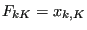

Next: Incremental (visco)plasticity: additive decomposition Up: Materials Previous: Deformation plasticity Contents
The implementation of incremental plasticity for nonlinear geometrical calculations in CalculiX follows the algorithms in [80] and [81] and is based on the notion of an intermediate stress-free configuration. The deformation is viewed as a plastic flow due to dislocation motion followed by elastic stretching and rotation of the crystal lattice. This is synthesized by a local multiplicative decomposition of the deformation gradient where  in Cartesian coordinates.
In the present implementation, the elastic response is isotropic and is deduced from a stored-energy function (hyperelastic response). Furthermore, the plastic flow is isochoric (the volume is conserved) and the classical von Mises-Huber yield condition applies. This condition can be visualized as a sphere in principal deviatoric stress space.
The hardening can consist of isotropic hardening, resulting in an expansion or contraction of the yield surface, of kinematic hardening, resulting in a translation of the yield surface, or of a combination of both. The hardening curve should yield the von Mises true stress versus the equivalent plastic logarithmic strain (cf. deformation plasticity for its definition).
Incremental plasticity is defined by the *PLASTIC card, followed by the isotropic hardening curve for isotropic hardening or the kinematic hardening curve for kinematic and combined hardening. For combined hardening, the isotropic hardening curve is defined by the *CYCLIC HARDENING card. The *PLASTIC card should be preceded within the same material definition by an *ELASTIC card, defining the isotropic elastic properties of the material.
By allowing the stress to leave the yield surface temporarily in order to regain it with time, creep effects can be modeled [78]. The viscous part of the viscoplastic law is defined by the *CREEP card. Default is a Norton type law. However, the user can also define his own law in user subroutine creep.f. If the *CREEP card is not preceded by a *PLASTIC card, a zero yield surface without any hardening effects is assumed. The *CREEP card must be preceded by an *ELASTIC card defining the isotropic elastic properties of the material. Notice that creep behavior is switched off in a *STATIC step.
For this model, there are 13 internal state variables:
These variables are accessible through the *EL PRINT (.dat file) and *EL FILE (.frd file) keywords in exactly this order (label SDV).
By using the *CHANGE MATERIAL, *CHANGE PLASTIC, *STATIC and *VISCO cards the user can switch between a purely plastic and creep behavior. The viscoplastic model implemented in CalculiX is an overstress model, i.e. creep only occurs above the yield stress. For a lot of materials this is not realistic. At high temperatures creep is frequently observed well below the yield stress. To simulate this behavior one can set the yield stress to zero. In order to simulate an initial large plastic deformation (e.g. due to forging or other machining operations) followed by creep at high temperature at operation conditions one can proceed as follows: one defines the material as a viscoplastic material using the *PLASTIC and *CREEP card. To switch off the creep behavior in the machining step one uses the *STATIC procedure. In a subsequent step at operating conditions the viscous behavior is switched on using the *VISCO procedure whereas the yield stress is set to zero by means of a *CHANGE MATERIAL and *CHANGE PLASTIC card.